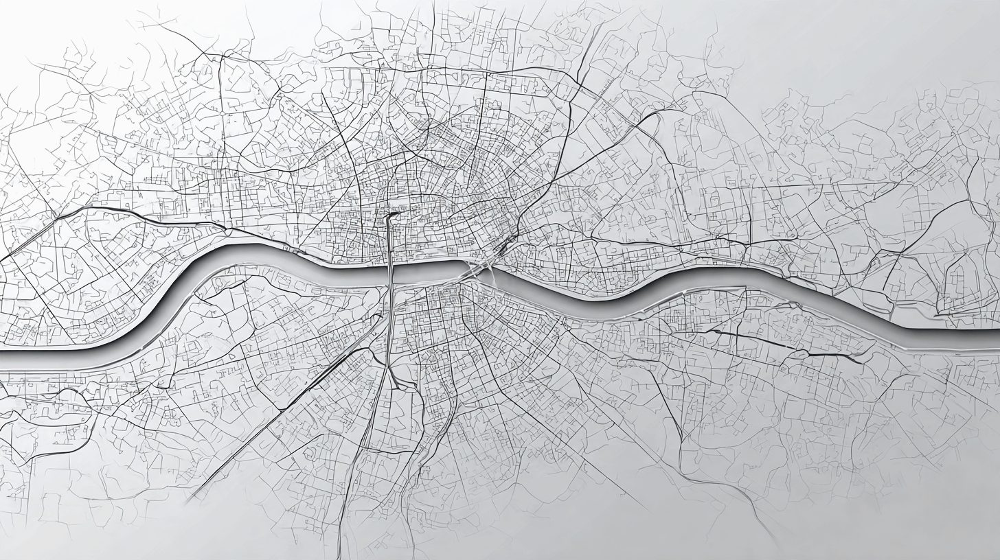
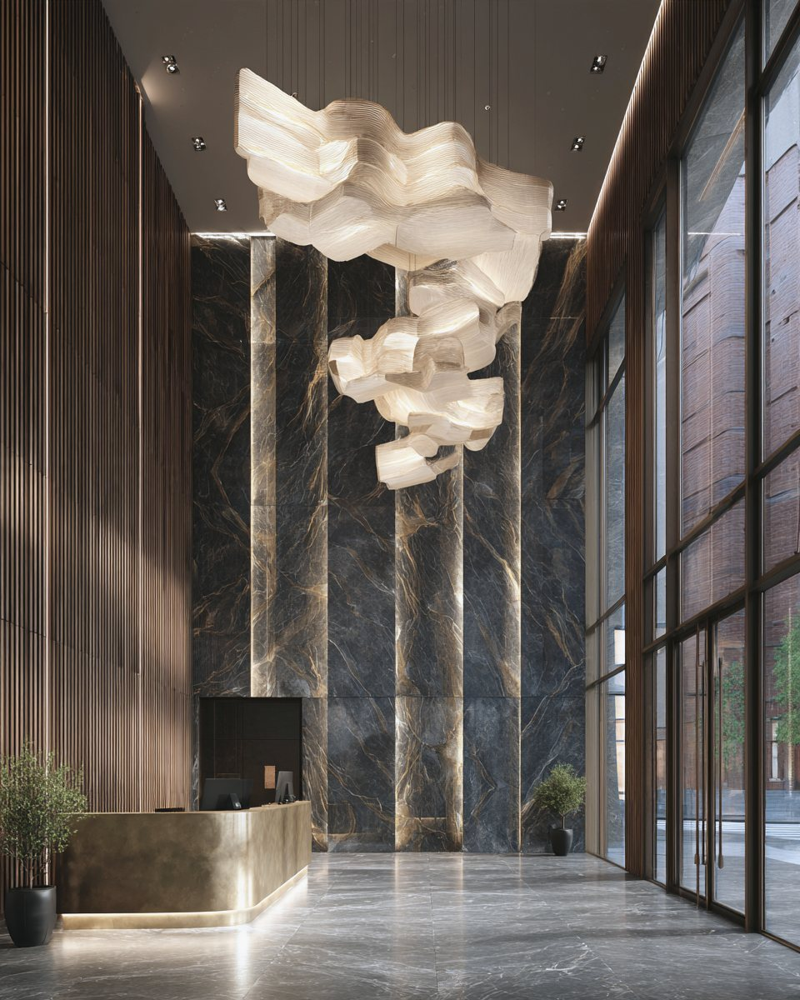

РазборКлассы домовСентябрь 2026350 домов
Что не сходится в классах
Класс дома в России никто не заверяет. Мы сравнили, как один и тот же дом называют каталоги, где на самом деле стоят «премиум» и «элит» — и завели свой класс: тот, до которого дом дотягивает по цифрам.
От редактора
Класс дома в России не заверяет никто. Нет ни госта, ни реестра, ни комиссии: «бизнес», «премиум» и «элит» пишет застройщик, а каталоги переписывают друг у друга — или не переписывают, и тогда один дом живёт в трёх классах сразу.
Мы решили не спорить о словах. Взяли все новые дома от бизнес-класса и выше — 350 штук — и сравнили то, что можно посчитать: адрес, число соседей, машиноместа, потолки и цену метра.
У семидесяти домов каталоги называют разные классы. «Премиум» стоит у МКАД, «элит» — на две тысячи квартир. Поэтому у каждого дома в нашей базе теперь два класса: заявленный — как дом продают — и класс NOTA — до которого он дотягивает по цифрам. Это не повод ничего не покупать. Это повод сравнивать дом с теми, с кем он на самом деле конкурирует.
Елена, редактор NOTA
Ярлык
Один дом — три класса
Класс в карточке новостройки — это то, что написал застройщик или сайт-каталог. Каталоги пишут по-разному. Five Towers в Донском районе в одном каталоге — бизнес, в другом — премиум, в третьем — элит. С Преображенской площадью, Chkalov в Басманном и Кутузов Сити на Гродненской — то же самое: по три ярлыка на дом.
Чаще всего спорят о верхних классах: среди «премиумов» спорный класс у 35 домов из 85, среди «элитов» — у 26 из 46. В бизнесе таких домов пять, в делюксе — четыре.
| Дом | Район | Что пишут | Класс NOTA | Квартир | Цена «от» за м² |
|---|---|---|---|---|---|
| Five Towers | Донской | бизнес · премиум · элит | премиум | 596 | 527 тыс |
| Преображенская площадь | Преображенское | бизнес · премиум · элит | бизнес | 603 | 511 тыс |
| Chkalov | Басманный | бизнес · премиум · элит | премиум | 396 | 669 тыс |
| Кутузов Сити | Можайский | бизнес+ · премиум · элит | премиум | 220 | 640 тыс |
Источники ярлыков — каталоги новостроек и обзоры консультантов: novostroev, mskguru, kvadroom, Метриум. Класс NOTA — как считаем, в главе 04.
Адрес
Премиум у МКАД, элит за центром
По рыночной мерке премиум стоит внутри Третьего транспортного кольца, элит и делюкс — в ЦАО, бизнес — в старых границах Москвы. В жизни ярлык уезжает далеко от центра.
Сити Бэй и Родина Парк — примерно в километре от МКАД, рядом АЛИА и Примавера в Покровском-Стрешневе, Крылатская 33 и Дом Горизонтов в Крылатском. Все они продаются как премиум.
С элитом похожая история: 17 из 46 городских «элитов» стоят за пределами ЦАО. Кутузов Сити на Гродненской улице — в двенадцати километрах от Кремля и примерно в трёх от МКАД. Хорошими эти дома быть не перестают, но конкурируют уже с другим рынком — и сравнивать их правильнее с соседями, а не с Остоженкой.

Цена
Классы заходят друг на друга
Цена не входит в нашу проверку класса — мы её только сверяем. И сверка показывает, что по заявленным классам границы размыты. Типичный бизнес стоит от 447 тысяч за метр, премиум — от 627 тысяч, элит — от 1,1 млн, делюкс — от 2,4 млн.
Новые Академики с ярлыком «элит» просят около 420 тысяч за метр — дешевле типичного бизнеса. Five Towers, Дрим Рива и Эра с тем же ярлыком — дешевле типичного премиума. Бывает и наоборот: Форум, Дом Франка, Лайф Тайм и Capital Towers просят больше миллиона за метр, оставаясь премиумом.
Заявленные классы. Полоса — цена «от» за метр у восьми домов из десяти в классе, черта — медиана. Москва без Рублёвки и Сколкова: там продают дома целиком.
Класс — это то, что написали. Цифры — то, что построили
Класс NOTA
Два класса у каждого дома
Спорить с каталогами бесполезно, поэтому мы ведём два класса. Заявленный — как дом позиционирует себя сам. Класс NOTA — тот же, пока цифры его подтверждают.
Проверяем четыре жёстких признака: адрес своего класса, число соседей, машиноместа на квартиру и высоту потолков (для элита и делюкса — от 3,3 м). Один промах — класс остаётся, промах уходит минусом в паспорт дома. Два и больше — дом опускается на ступень: премиум становится бизнесом, элит — премиумом, делюкс — элитом.
Так понизились 113 домов: 68 «премиумов», 29 «элитов» и 16 «делюксов». Чаще всего не хватает потолков и машиномест. Republic, MOD и Остров продаются как премиум, но по адресу, числу квартир и паркингу это большой бизнес. Chkalov, Five Towers и Кутузов Сити — хороший премиум, а не элит.
После пересчёта классы перестают заходить друг на друга так сильно. Типичный премиум по классу NOTA — 219 квартир вместо 676 и 1,27 машиноместа на квартиру вместо 0,53. Медиана цены премиума поднимается с 627 до 950 тысяч за метр, элита — с 1,1 до 2,28 млн.
Классы NOTA. Полоса — цена «от» за метр у восьми домов из десяти, черта — медиана. Москва без Рублёвки и Сколкова.
Соседи
«Элит» на две тысячи квартир
Элит и делюкс — это не только отделка, но и число соседей. Мерка рынка: в элитном доме — до ста квартир, в делюксе — до тридцати.
Типичный дом из тех, что называют себя элитными, — 130 квартир. Самые крупные — Эра (2 048), Коллекция Лужники (1 106) и Бадаевский (871). Из 42 «элитов», назвавших число квартир, норму проходят 17. В делюксе строже: девять из тридцати одного, а типичный дом — 49 квартир.
В премиуме встречается и совсем другой масштаб: Остров в Хорошёво-Мнёвниках — двенадцать тысяч квартир.

Паркинг
Машину ставить некуда. Везде
Норма паркинга — сколько машиномест нужно на квартиру, чтобы двор не превратился в стоянку: 0,8 места в бизнесе, 1,5 в премиуме, 2 — в элите и делюксе. До своей нормы не дотягивает ни один заявленный класс.
Красная черта — норма класса, серая полоса — типичный дом. Шкала от 0 до 2 машиномест на квартиру.
И чем дороже дом, тем реже застройщик говорит, сколько в нём машиномест: в бизнесе цифру раскрыли три дома из четырёх, в делюксе — половина.
Портреты классов
| Класс | Заявлено | По классу NOTA | Из заявленных в ЦАО | Типичный дом, квартир | Цена «от», медиана за м² | Машиномест на квартиру | Спорят каталоги |
|---|---|---|---|---|---|---|---|
| Бизнес | 171 | 239 | 13 | 807 | 447 тыс | 0,39 | 5 |
| Премиум | 85 | 46 | 15 | 676 | 627 тыс | 0,53 | 35 |
| Элит | 46 | 33 | 29 | 130 | 1,1 млн | 1,27 | 26 |
| Делюкс | 48 | 32 | 48 | 49 | 2,4 млн | 1,38 | 4 |
Типичный дом, цена и машиноместа — по заявленному классу, медианы по домам, где застройщик раскрыл цифры. Цена — Москва без Рублёвки и Сколкова.
Где сходится
Дома, где класс совпадает с цифрами
По одному в каждом классе: заявленный класс и класс NOTA совпадают, адрес своего класса и число соседей в норме. Итог паспорта у всех четырёх — «Отметка».
Scala
160квартир там, где в классе обычно строят больше восьмисот, — в Красносельском районе
паспорт: 4 «да» из 4 известных Премиум · MR GroupФорум
46квартир внутри Садового кольца и 1,67 машиноместа на каждую при норме 1,5
паспорт: 8 «да» из 8 известных Элит · ГУТА-ДевелопментКрасный Октябрь
29квартир на Берсеневской набережной — элитный дом, который проходит норму соседей
паспорт: 6 «да» из 6 известных Делюкс · R4S GroupБольшая Никитская 16
4квартиры на весь дом, в двух шагах от консерватории
паспорт: 4 «да» из 4 известныхКак считали
Цифры,
а не прилагательные
Заявленный класс — тот, под которым дом продают застройщик и каталоги; если источники расходятся, дом помечен как спорный. Класс NOTA — заявленный, пока его подтверждают четыре признака: адрес, число соседей, машиноместа и потолки. Два промаха и больше — ступенью ниже.
Дальше каждый дом проходит паспорт NOTA: девять проверок — адрес своего класса, окружение, повседневность, число соседей, машина, застройщик, сроки, юридика и цена. «Нет» по ним — минус, допуск минусов зависит от класса. Красная линия — только у трёх: тяжёлое соседство, банкротство или остановленные стройки застройщика и продажа мимо эскроу.
Цена в класс не входит — только сверяется. Расстояния до МКАД и Третьего кольца — по прямой, по схеме колец. Данные — база NOTA на 24 сентября 2026: каталоги новостроек, проектные декларации на наш.дом.рф, ЕРЗ.РФ и novostroev.